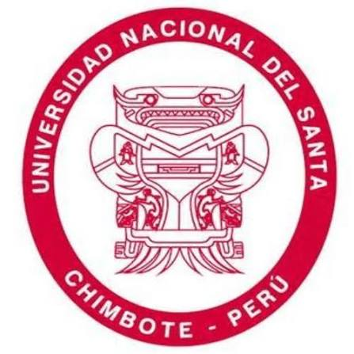
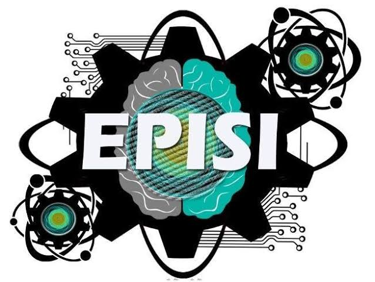

Esta plataforma fue creada para concientizar el uso responsables de los residuos electronicos en la promocion del décimo ciclo de la carrera de Ingeniería de Sistemas e Informática de la Universidad Nacional del Santa.
Resumen